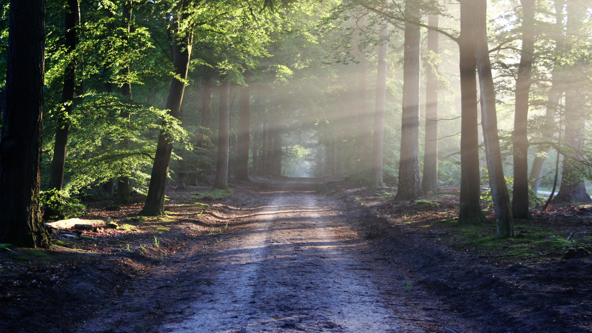

-

Mystic Forest
settings_ethernet3,2 km
north9,7 hm
circle circle circle circle -

Jungle Run
settings_ethernet4,1 km
north1,2 hm
circle circle circle circle -

Autumn Road
settings_ethernet5,2 km
north10,2 hm
circle circle circle circle -

Silent Forest
settings_ethernet21,4 km
north52,0 hm
circle circle circle circle -

Summer Fields
settings_ethernet12,4 km
north2,1 hm
circle circle circle circle -

Summer Holiday
settings_ethernet7,3 km
north4,8 hm
circle circle circle circle -

Forest Path
settings_ethernet8,9 km
north10,5 hm
circle circle circle circle -

Under the Palm Trees
settings_ethernet3,1 km
north0,0 hm
circle circle circle circle -

Winter Wonderland
settings_ethernet61,8 km
north48,2 hm
circle circle circle circle